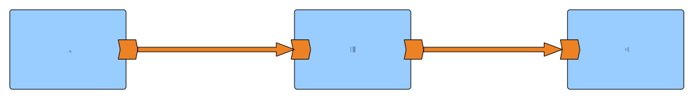
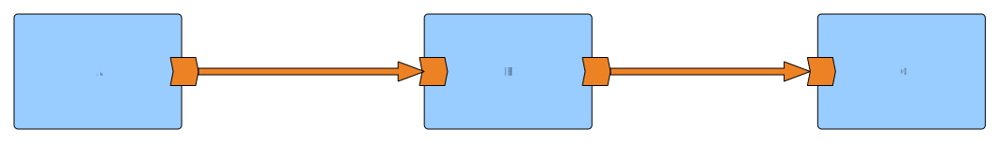

#geocampes se nos va de las manos @delawen pic.twitter.com/qzd1etVsqm
— Micho Garcia (@michogar) October 22, 2016
@delawen hablando sobre zombis #geocampes pic.twitter.com/U285FR5hUW
— wladimir szczerban (@bolosig) October 22, 2016
#geocampes se nos va de las manos @delawen pic.twitter.com/qzd1etVsqm
— Micho Garcia (@michogar) October 22, 2016
@delawen hablando sobre zombis #geocampes pic.twitter.com/U285FR5hUW
— wladimir szczerban (@bolosig) October 22, 2016

 



# Write your routes here, for example:
- from:
uri: "timer:yaml"
parameters:
period: "1000"
steps:
- set-body:
constant: "Hello Camel K from yaml"
- to: "log:info"
<?xml version="1.0" encoding="UTF-8"?>
<routes xmlns:xsi="http://www.w3.org/2001/XMLSchema-instance"
xmlns="http://camel.apache.org/schema/spring"
xsi:schemaLocation="
http://camel.apache.org/schema/spring
http://camel.apache.org/schema/spring/camel-spring.xsd">
<!-- Write your routes here, for example: -->
<route id="xml">
<from uri="timer:xml?period=1000"/>
<setBody>
<simple>Hello Camel K from ${routeId}</simple>
</setBody>
<to uri="log:info"/>
</route>
</routes>
import java.util.Random;
import org.apache.camel.builder.RouteBuilder;
public class HelloWorld extends RouteBuilder {
@Override
public void configure() throws Exception {
from("timer:java?period=1000")
.setBody()
.simple("Hello World!")
.to("log:info");
}
}
from("timer:java?period=1000")
.setBody()
.simple("Hello World!")
.to("log:info");
from("timer:java")
.choice()
.when(someCondition)
.setBody().simple("Hello World!")
.when(anotherCondition)
.setBody().simple("¡Hola Mundo!")
.otherwise()
.setBody().simple("Salut Monde!")
.end()
.to("log:info");


Camel Quarkus
Camel K
Kamelets
from("timer:java?period=1000")
//.setBody()
// .simple("Hello World!")
// Generate random name
.process(processor)
.to("log:info");
Processor processor = new Processor() {
String[] firstname = new String[] { "Aleja", "Almerinda", "Ambrosia", "Benilda",
"Bercia", "Cayetana", "Ermisinda", "Escolástica", "Esmaragda", "Esmerencia"};
String[] lastname = new String[] {"Zuzunaga", "Sorní", "Sandemetrio", "Bonachera",
"Sazón", "Piesplanos", "Parraverde", "Alcoholado" };
Random r = new Random();
@Override
public void process(Exchange exchange) throws Exception {
StringBuilder name = new StringBuilder("Hello ");
name.append(firstname[r.nextInt(firstname.length)]);
name.append(" ");
name.append(lastname[r.nextInt(lastname.length)]);
name.append("!");
exchange.getMessage().setBody(name.toString());
}
};
Exchange[
ExchangePattern: InOnly,
BodyType: String,
Body:
{"coord":
{"lon":-5.9761,"lat":37.3824},
"weather":[
{
"id":804,
"main":"Clouds",
"description":"overcast clouds",
"icon":"04d"
}],
"base":"stations",
"main":
{
"temp":293.64,
"feels_like":293.68,
"temp_min":292.59,
"temp_max":294.26,
"pressure":1003,
"humidity":74
},
"visibility":7150,
"wind":{"speed":3.13,"deg":225,"gust":8.49},
"clouds":{"all":100},
"dt":1619448268,
"sys":{
"type":3,"id":2011488,
"country":"ES","sunrise":1619415275,
"sunset":1619464109},
"timezone":7200,"id":2510911,"name":"Seville","cod":200}
]
from("timer:weathertest")
.to("weather:foo?location=Sevilla,Spain&appid={{TOKEN}}&geolocationAccessKey={{TOKEN}}")
.to("log:info");
public class ChatBotLogic {
public String chatBotProcess(String message) {
if( "do-not-reply".equals(message) ) {
return null; // no response in the chat
}
return "Received " + message;
}
}
from("telegram:bots?authorizationToken={{TELEGRAM_BOT_TOKEN}}")
.bean(ChatBotLogic.class)
.to("telegram:bots?authorizationToken={{TELEGRAM_BOT_TOKEN}}");
from("paho-mqtt5://{{APP_ID}}/devices/{{DEVICE_ID}}/up?host=" + broker)
.unmarshal().json(JsonLibrary.Gson, Device.class)
.setBody().simple("The device ${body.name} is a ${body.description}.")
.setHeader("CamelTelegramChatId", constant("{{MY_CHAT_ID}}"))
.to("telegram:bots?authorizationToken={{TELEGRAM_BOT_TOKEN}}");
{
"ids": {
"device_id": "my-device",
"dev_eui": "0102030405060708",
"join_eui": "0102030405060708"
},
"name": "My Device",
"description": "Living room temperature sensor",
"lorawan_version": "MAC_V1_0_2",
"lorawan_phy_version": "PHY_V1_0_2_REV_B",
"frequency_plan_id": "EU_863_870_TTN",
"supports_join": true,
"root_keys": {
"app_key": {
"key": "01020304050607080102030405060708"
}
}
}
Puedes encontrar más información en
La presentación está publicada en
Si la abres y pulsas la tecla s verás las notas